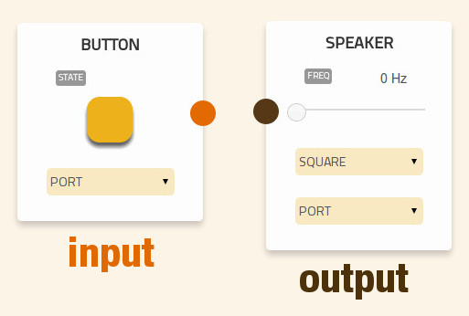
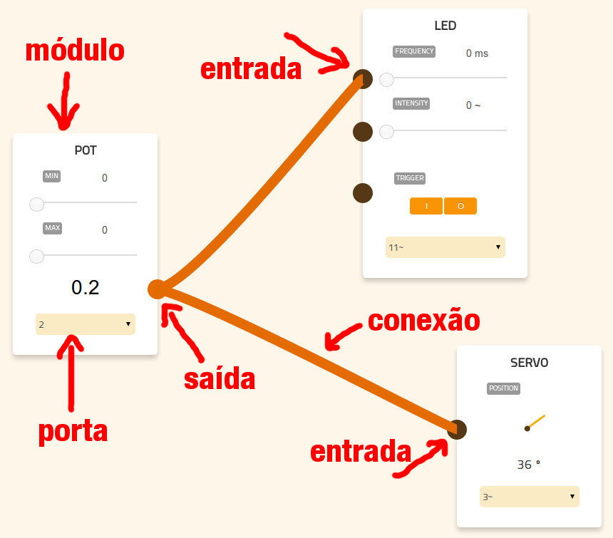
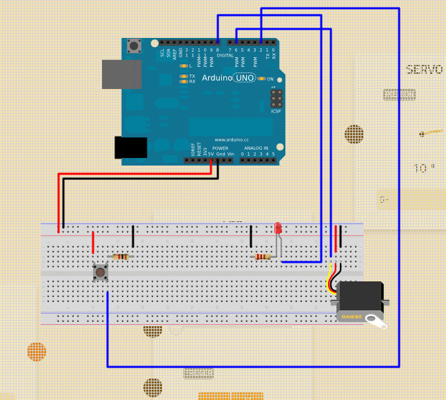

Selecione os componentes de entrada e saída!
Configure os componentes como desejar. Faça conexões entre métodos levando a saída de um módulo até a entrada de outro módulo.
Tenha em mãos o passo a passo para montar os componentes
Para apagar um módulo, arraste-o até a lixeira.